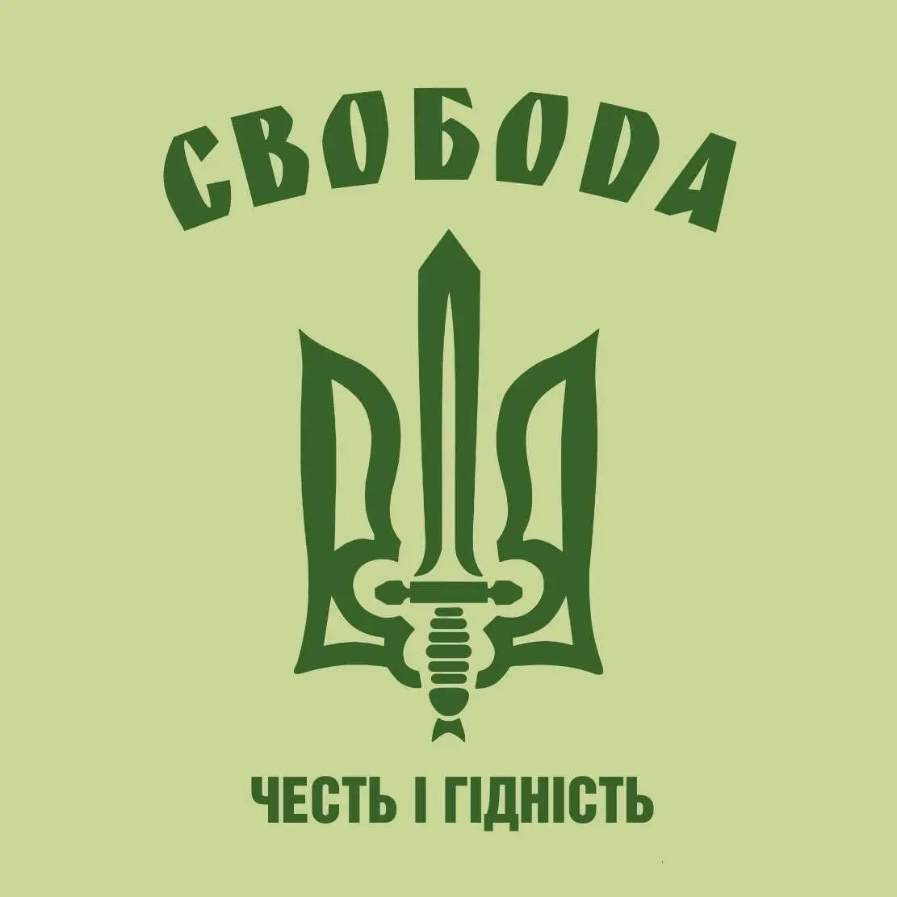

Віктор Ярмоленко
Віктор був багаторазовим чемпіоном Києва з кіокушинкай карате і представляв спортивний клуб “Доджо”.
Народився 2 січня 1976 року в місті Київ.
Національна гвардія України
Спогад про героя
До війни мав невелику будівельну фірму. Але після вторгнення окупантів пішов добровольцем захищати свою землю до лав Збройних сил України. Звільняв Бучу та Ірпінь, де російська армія вчинила справжні звірства. А після звільнення Київщини разом із побратимами вирушили на Схід.
Під обстрілом ворога він вогнем з автомата прикривав перегрупування військовослужбовців свого підрозділу. Не зважаючи на отримане осколкове вогневе поранення, зумів знищити 5 окупантів. Однак під час чергового обстрілу військовослужбовець отримав осколкові поранення, не сумісні із життям. Похований 19 травня 2022 року на Лісовому кладовищі в Києві.
Загинув Герой 10 травня 2022 року на Луганщині, біля міста Рубіжне.
У Віктора лишилась дружина та двоє дітей.